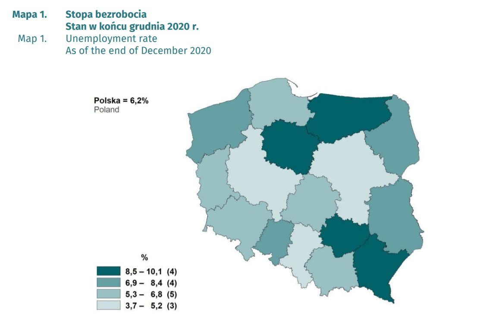
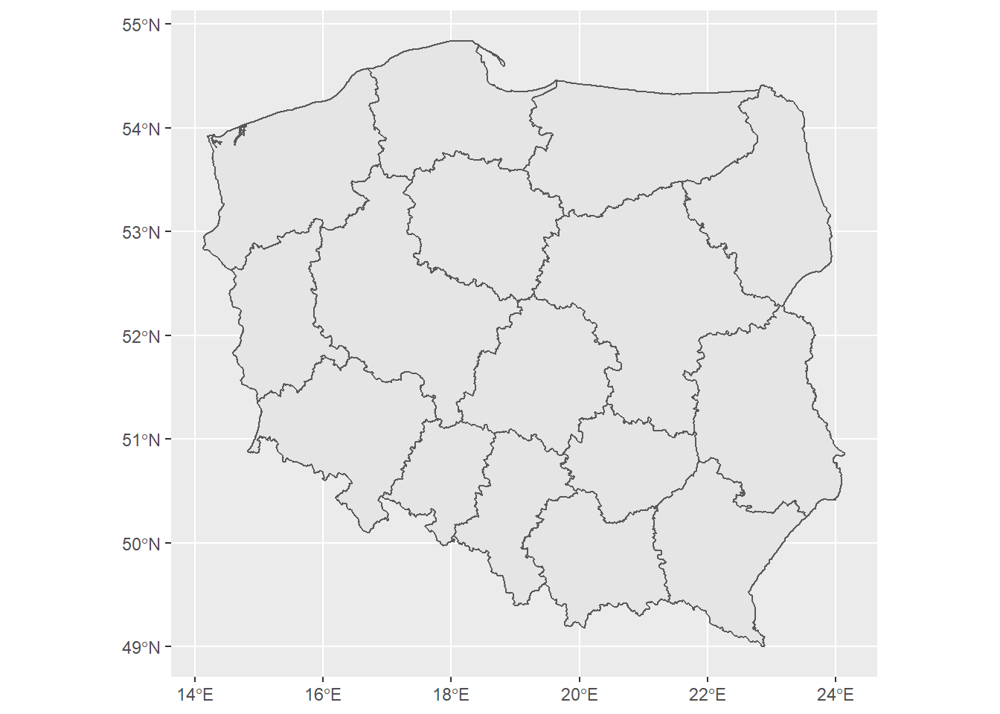
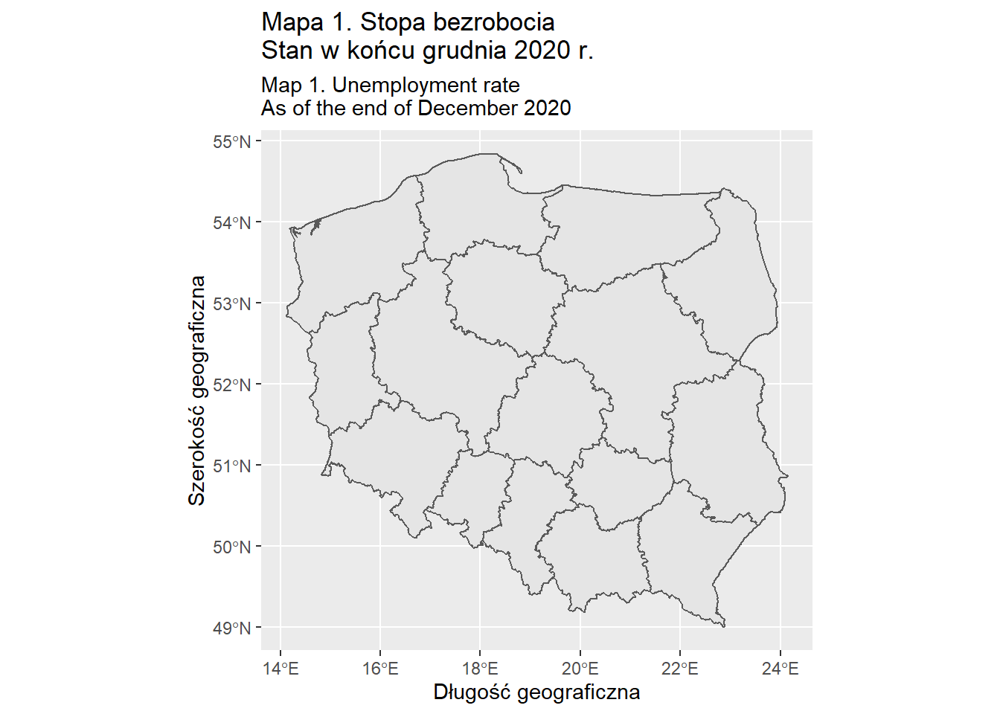
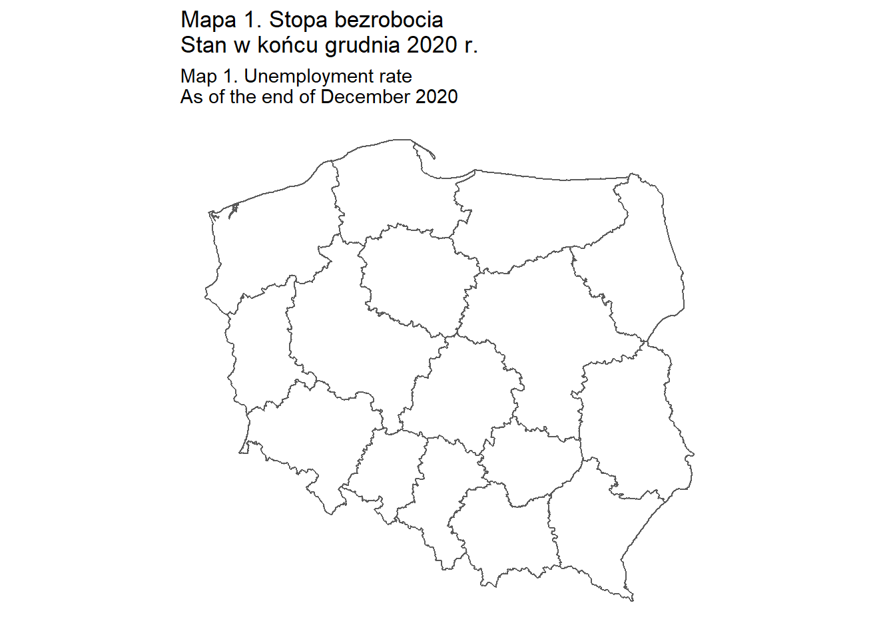
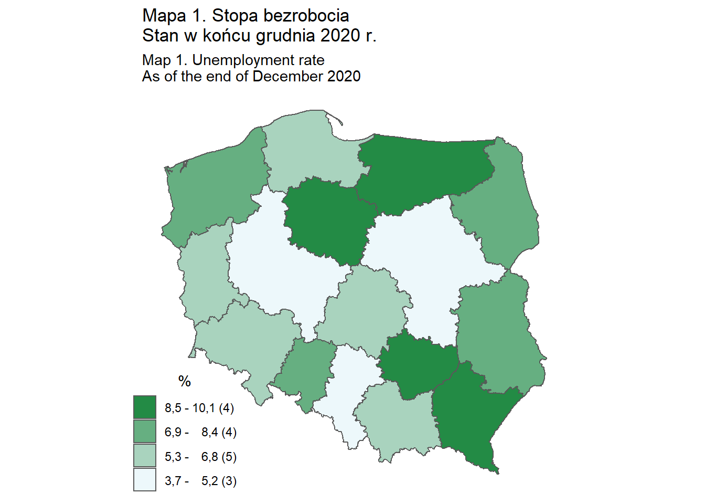

Tworzenie prostego kartogramu ćw.1
Korzystając z publikacji Bezrobocie rejestrowane. I-IV kwartał 2020 roku, spróbujmy stworzyć prosty kartogram zamieszczony na stronie 9 tego opracowania.

W pierwszej kolejności wczytujemy dane przestrzenne za pomocą funkcji read_sf z pakietu sf, a następnie dane atrybutowe dla województw za pomocą funkcji read_xlsx z pakietu readxl. W zbiorze unempl dwuznakowy kod województwa za pomocą funkcji substr i zapisujemy go w zmiennej o nazwie kod_woj2. Łączymy oba obiekty w jeden zbiór za pomocą funkcji merge deklarując nazwy zmiennych, po których łączymy obydwa zbiory.
woj<-read_sf("dane/gadm36_POL_1.shp")
unempl<-read_xlsx("dane/woj_un_rate.xlsx")
unempl$KOD_WOJ2<-substr(unempl$KOD_WOJ,1,2)
dane_1<-merge(woj,unempl,by.x="CC_1",by.y="KOD_WOJ2")Stworzenie mapy konturowej województw za pomocą instrukcji ggplot(data=dane), w której deklarujemy obiekt klasy sf za pomocą instrukcji data=. Na końcu linii znajduje się znak + oznaczający ciąg dalszy polecenia. W drugiej linii pojawia się instrukcja geom_sf, dzięki której dodajemy geometrię zawartą we wcześniej zdefiniowanym obiekcie dane.
par(mai=rep(0,4),mar=rep(0,4))
ggplot(data=dane_1) +
geom_sf()
Dodanie tytułu i opisu osi wykresu mapowego.
par(mai=rep(0,4),mar=rep(0,4))
ggplot(data=dane_1) +
geom_sf() +
xlab("Długość geograficzna")+ylab("Szerokość geograficzna") +
ggtitle("Mapa 1. Stopa bezrobocia\nStan w końcu grudnia 2020 r.", subtitle = "Map 1. Unemployment rate\nAs of the end of December 2020")
Wyłączenie wyświetlania siatki i współrzędnych geograficznych, białe tło.
- dodanie opcji fill=NA w poleceniu geom_sf w celu wyeliminowania szarego tła
- usunięice linii xlab(“Długość geograficzna”)+ylab(“Szerokość geograficzna”) +
- dodanie elementów instrukcji theme
- rect=element_blank() - usunięcie tła wnętrzna wykresu (między osiami)
- axis.ticks = element_blank() - usunięcie znacznikóW osi,
- axis.text.x = element_blank() - usunięcie tekstu osi x,
- axis.text.y = element_blank() - usunięcie tekstu osi y.
par(mai=rep(0,4),mar=rep(0,4))
ggplot(data=dane_1) +
geom_sf(fill=NA) +
ggtitle("Mapa 1. Stopa bezrobocia\nStan w końcu grudnia 2020 r.", subtitle = "Map 1. Unemployment rate\nAs of the end of December 2020") +
theme(rect=element_blank(), axis.ticks = element_blank(), axis.text.x = element_blank(), axis.text.y = element_blank())
Kolorystyka mapy, legenda.
intervals<-c(3.6,5.2,6.8,8.4,10.1)
dane_1$groups<-as.character(cut(dane_1$UN_RATE,breaks=intervals))
etykiety=c("3,7 - 5,2","5,3 - 6,8","6,9 - 8,4","8,5 - 10,1")
ile<-as.character(paste0(" (",as.vector(table(dane_1$groups)),")"))
etykiety<-paste0(etykiety,ile)
pal<-colorRampPalette(c("#EDF8FB","#238B45"))(4)
par(mai=rep(0,4),mar=rep(0,4))
ggplot(dane_1) +
geom_sf(aes(fill=groups)) +
scale_fill_manual(values=pal,labels=etykiety) +
ggtitle("Mapa 1. Stopa bezrobocia\nStan w końcu grudnia 2020 r.", subtitle = "Map 1. Unemployment rate\nAs of the end of December 2020") +
labs(fill="%")+
guides(fill=guide_legend(reverse = T)) +
theme(rect=element_blank(), axis.ticks = element_blank(), axis.text.x = element_blank(), axis.text.y = element_blank(),
legend.position = c(0.1,0.15),legend.title.align=0.5,legend.text.align = )
Dodanie adnotacji oraz etykiet - nazw województw i wartości wskaźnika.
ggplot(dane_1) +
geom_sf(aes(fill=groups)) +
scale_fill_manual(values=pal,labels=etykiety) +
ggtitle("Mapa 1. Stopa bezrobocia\nStan w końcu grudnia 2020 r.", subtitle = "Map 1. Unemployment rate\nAs of the end of December 2020") +
labs(fill="%")+
guides(fill=guide_legend(reverse = T)) +
geom_sf_text(mapping=aes(label=NAME_1),size=3)+
geom_sf_text(mapping=aes(label=UN_RATE),size=3,nudge_y = -0.2)+
annotate("text",x=15,y=55, label="Polska = 6,2%",size=4) +
annotate("text",x=14.68,y=54.8, label="Poland",size=4) +
theme(rect=element_blank(), axis.ticks = element_blank(), axis.text.x = element_blank(), axis.text.y = element_blank(),
axis.title.x = element_blank(), axis.title.y = element_blank(),
legend.position = c(0.1,0.15),legend.title.align=0.5,legend.text.align = )## Warning in st_point_on_surface.sfc(sf::st_zm(x)): st_point_on_surface may not give correct results for longitude/latitude data
## Warning in st_point_on_surface.sfc(sf::st_zm(x)): st_point_on_surface may not give correct results for longitude/latitude data